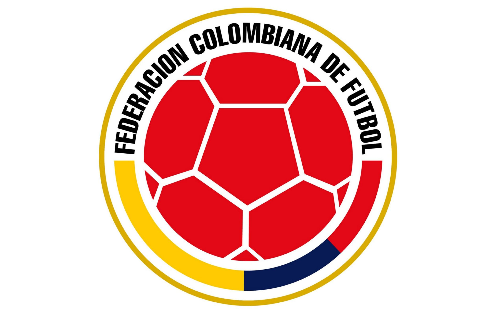
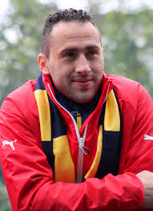
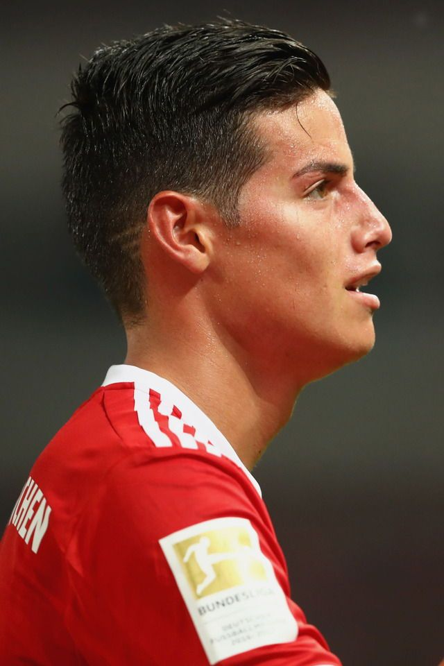

Hizo parte de la nómina con la selección de fútbol de Colombia Sub-20 en la Copa Mundial de Fútbol Juvenil de 2005,11 de igual manera, ya ha recibido convocatorias para hacer parte de la selección de mayores. En esta, se adueñó del puesto en las eliminatorias para la Copa Mundial de Sudáfrica 2010, además se ha apoderado de la portería y se ha ganado la confianza de la afición colombiana, a pesar de su corta edad.
El 6 de junio de 2011 fue convocado por el técnico Hernán Darío Gómez para jugar en la Copa América 2011 que se realizó en Argentina. Sin embargo, en el entrenamiento del martes 28 de junio, sufrió un choque con el delantero Hugo Rodallega, que le ocasionó una fractura en el tabique nasal, por lo que estuvo incapacitado por 15 días. En su reemplazo fue convocado Nelson Fernando Ramos; por esta lesión no pudo jugar los partidos en la Copa América. En la décimo sexta fecha de las eliminatorias al mundial del 2014 fue titular en la igualdad 3 a 3 frente a la selección chilena en el partido que confirmó la vuelta de la selección colombiana a una copa del mundo luego de 16 años. Ospina fue convocado por José Pekerman para disputar las eliminatorias al Mundial de Brasil 2014, disputando los 16 partidos como titular y sería elegido como el Mejor Arquero de las eliminatorias, con solo 13 goles encajados tendría la valla menos vencida del proceso.

James fue convocado a la selección sub-20 de Colombia en el Torneo Esperanzas de Toulon por el técnico Eduardo Lara, de la cual se le dio el brazalete de capitán en lugar de Juan David Cabezas, quien lo fue en el Torneo sub-20 Sudamericano de Perú.
Debido a su actuación en el Porto, James ofició como 10 en los partidos del torneo. Colombia, al mando de James, logró llegar a la final al derrotar a México en la semifinal. Al llegar a la final, Francia se adelantó en el marcador, pero casi al final del partido James dio un centro para que Duván Zapata rematara e igualara el marcador, al final Colombia ganaría el torneo en la tanda de penales. No obstante, James se consolidó como el máximo asistente del Torneo con tres asistencias y logró levantar el trofeo como campeón del certamen, además de ser nombrado el mejor jugador del torneo.
Además, fue titular de la selección sub-20 de Colombia, en la Copa Mundial de Fútbol Sub-20 de 2011 que se disputó, precisamente, en Colombia. Con el retorno del también volante de creación Michael Ortega, James se adueñó del mediocampo de la selección. Hizo tres goles, uno de penal ante la selección de Francia, otro ante la de Malí y otro más de penal ante Costa Rica que le daría la clasificación al equipo colombiano por 3-2 en los octavos de final del Mundial en un agónico partido al último minuto. En los cuartos de final la selección mexicana eliminó al conjunto local con un marcador 3-1 a favor de los mexicanos.
James, durante su paso por la selección sub-20, demostró ser un líder, tomando las riendas del equipo juvenil. Posteriormente, y a pesar de no tener la experiencia que muchos periodistas de Colombia creían necesaria, James Rodríguez terminó dando su paso a la selección absoluta, tras recibir la merecida convocatoria por parte de José Pekerman, gracias a sus buenas actuaciones tanto en el Porto como en la misma selección juvenil.